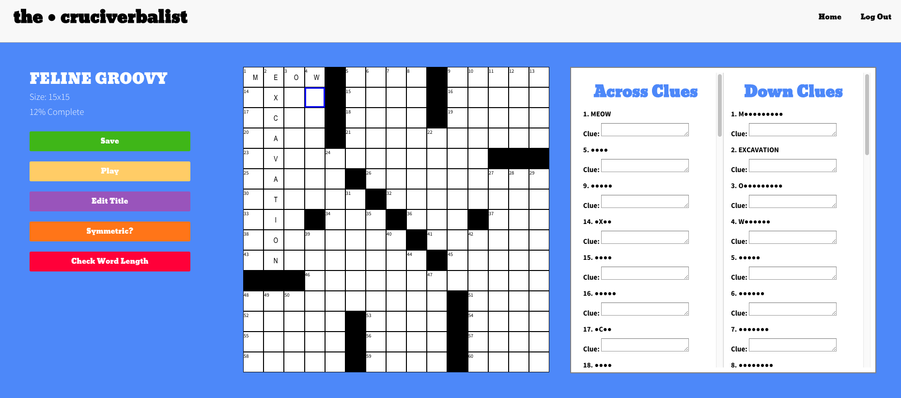
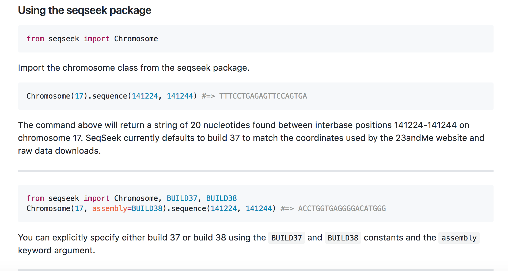
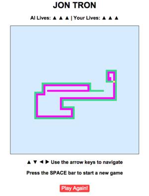
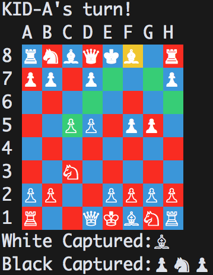

Greetings! My name is Jon. I am software engineer living in San Francisco. I am currently looking for a new job in NYC. I am particularly interested in working at a smaller, growing tech company.
I have a degree in neuroscience from Brown University. In college, I worked in a lab researching the combinatorial effects of HIV infection and alcohol use on white matter integrity using diffusion tensor imaging (DTI). You can check out a paper I wrote here.
After graduating, I worked as a research assistant at the UCSF Memory and Aging Center researching Alzheimer's disease and frontotemporal dementia. In this role, I coordinated multiple research studies and wrote code to expedite the processing and analysis of MRI images. I learned that I love to code and decided to attend App Academy.
I then worked as a software engineer at the biotechnology company 23andme for a year. Here, I developed a Django application for the processing of NGS results. You can check out I tool I helped to build here. I left 23andme at the end of 2016 and spent the last few months traveling around Asia - mainly Nepal, India, and Indonesia.
I do things other than work. I play the alto saxophone. I love to solve and create crosswords. I read novels. I practice bikram yoga and I recently took up bouldering. Feel free to drop me a line if you'd like to learn more!

The Cruciverbalist is a single-page Backbone.js app built on a RESTful Rails architecture that allows users to easily design, save, and play crossword puzzles. I built this app as my final project while I was at App Academy.

SeqSeek is Python package I helped to write while working at 23andme. The package offers easy access to the human genome. Users can specify a chromosome, a start position, and an end position and receive a sequence of bases as a string.

The game is written with JavaScript and jQuery. I implemented an AI that prefers to hug walls and will try to optimize the amount of space left available to it.

A Ruby implementation of chess with a command line interface. I used YAML to allow for game saving and implemented a simple AI.